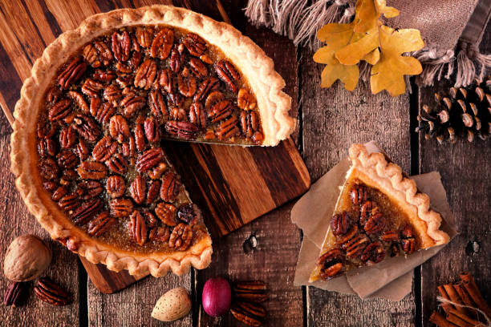

Pecan Pie

Ingredients
Crust
- 2 and a half cups flour (Plus more for shaping and rolling)
- 1 teaspoon salt
- 6 tablespoons unsalted butter
- 2/3 cup vegetable shortening
- 1/2 cup cold water
Filling
- 2 and 1/2 cups (250g) shelled pecans (pecan halves)
- 5 Tablespoons (72g) unsalted butter, melted and slightly cooled
- 1/2 cup (100g) packed light or dark brown sugar
- 1 Tablespoon (8g) all-purpose flour*
- 2 teaspoons pure vanilla extract
- 1/2 teaspoon salt
- 3 large eggs, at room temperature
- 1 cup (240ml) pure maple syrup*
- sea salt for sprinkling
- Whipped Cream (Optional)
Make the Crust
- Whisk the flour and salt together in a large bowl.
- Add the butter and shortening. Using a pastry cutter or two forks,
cut the butter and shortening into the mixture until it resembles coarse meal
(pea-sized bits with a few larger bits of fat is OK).
In this step, you’re only breaking up the cold fat into tiny little flour-coated
pieces; you’re not completely incorporating it.
Do not overwork the ingredients.
- Measure 1/2 cup (120ml) of water in a cup. Add ice.
Stir it around. From that, measure 1/2 cup (120ml) of water,
since the ice has melted a bit. Drizzle the cold water in, 1 Tablespoon (15ml) at a time,
and stir with a rubber spatula or wooden spoon after every Tablespoon has been added.
Stop adding water when the dough begins to form large clumps. I always use about 1/2 cup of water,
and need a little more in dry winter months. Do not add any more water than you need.
- Transfer the pie dough to a floured work surface.
Using floured hands, fold the dough into itself until the flour is fully incorporated into the fats.
The dough should come together easily and should not feel overly sticky.
Avoid overworking the dough. If it feels a bit too dry or crumbly, dip your fingers in the ice water
and then continue bringing dough together with your hands. If it feels too sticky,
sprinkle on more flour and then continue bringing dough together with your hands.
Form it into a ball. Use a sharp knife to cut it in half. If it’s helpful, you should have about 1 lb,
8 ounces dough total (about 680g). Gently flatten each half into 1-inch-thick discs using your hands.
- Wrap each tightly in plastic wrap. Refrigerate for at least 2 hours and up to 5 days.
- After the dough has chilled for at least 2 hours, you can roll it out.
Work with one crust at a time, keeping the other in the refrigerator until you’re ready to roll it out.
Lightly flour the work surface, rolling pin, and your hands, and sprinkle a little flour on top of the dough.
Use gentle-medium force with your rolling pin on the dough—don’t press down too hard on the dough;
you’re not mad at it! When rolling dough out, start from the center and work your way out in all directions,
turning the dough with your hands as you go. Between passes of the rolling pin, rotate the pie crust and even flip it,
to make sure it’s not sticking to your work surface. Sprinkle on a little more flour if it’s sticking; don’t be afraid to use a little more flour.
If you notice the dough becoming a lopsided circle as you’re rolling it out, put down the rolling pin and use your hands to help mold the dough back into an even circle.
Roll the dough into a very thin 12-inch circle, which is the perfect size to fit a 9-inch pie dish.
Your pie dough will be about 1/8 inch thick, which is quite thin. Visible specks of butter and fat in the dough are perfectly normal and expected.
- Because your dough is so thin, use your rolling pin to help transfer the pie crust to the pie dish.
Carefully roll one end of the circle of dough gently onto the rolling pin, rolling it back towards you,
slowly peeling it off the work surface as you go. Pick it up, and carefully roll it back out over the top of the pie dish.
Filling
- After the pie crust has chilled, adjust the oven rack to the lower third position and preheat the oven to 350°F (177°C).
- Roll out the chilled pie dough and blind bake: On a floured work surface,
roll out one of the discs of chilled dough (you can freeze the 2nd for later use, see note). Turn the dough about a quarter turn after every few rolls until you have a circle 12 inches in diameter.
Carefully place the dough into a 9-inch pie dish.* Tuck it in with your fingers, making sure it is smooth. Flute or crimp the edges of the crust. Brush edges with egg wash.
Chill for 20 minutes in the refrigerator or freezer. (Crust will shrink otherwise!) Line the chilled pie crust with parchment paper or aluminum foil.
Fill with 2 sets of pie weights or dried beans. Bake for 15 minutes. Remove pie from the oven and carefully lift the parchment paper/aluminum foil (with the weights) out of the pie.
- The filling: Carefully spread pecans evenly inside warm pie crust. Set aside.
Whisk the melted butter, brown sugar, and flour together in a large bowl until combined and thick.
Whisk in the vanilla extract, salt, eggs, and pure maple syrup until combined. Pour evenly over pecans.
- Bake the pie for 40-50 minutes, or until the top is lightly browned. After the first 20 minutes of bake time,
place a pie crust shield on top of the pie to prevent the edges from browning too quickly.
You can also tent a piece of aluminum foil over the whole pie if the top is browning too quickly.
Remove finished pie from the oven and sprinkle sea salt on top. Place on a wire rack to cool completely.
The pie filling will set as it cools.
- Slice and serve pie at room temperature.